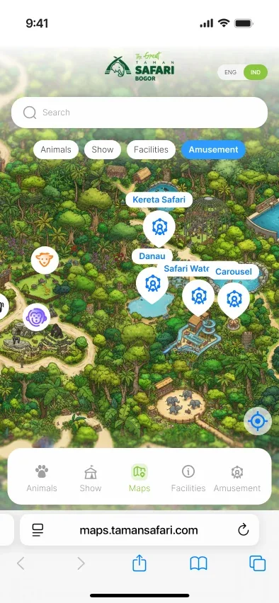
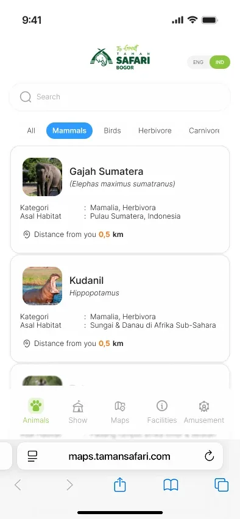
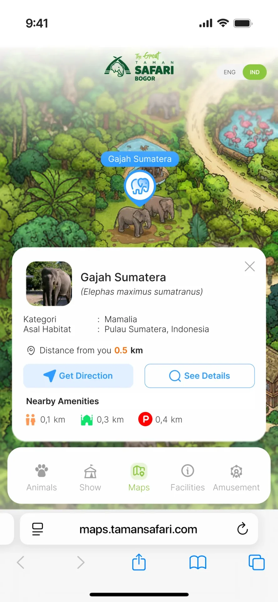
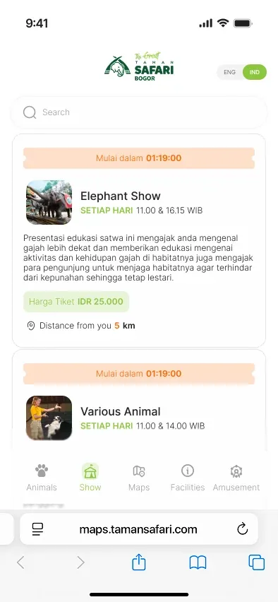
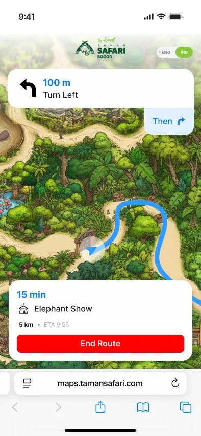

Make programs easier to explore
Program pages organize overview, objectives, eligibility, curriculum, electives, field learning, and FAQs into a consistent structure.
A complete university website design for the School of Management, Tribhuvan University, covering 87 screens and 81 component variants across desktop and mobile.
SOMTU needed a single digital experience for prospective students, current students, faculty, and visitors to discover programs, follow updates, explore research and resources, and move into registration.
The site brings together institutional information, programs, updates, events, research, resources, results, and registration so different audiences can move through one coherent academic experience.
Designed for desktop and mobile, the experience keeps content hierarchy, navigation, search, filters, and application progress consistent across screen sizes.
A large academic website needs clear information architecture, strong content hierarchy, and consistent interaction patterns across many types of content.
Prospective students need to understand programs and eligibility, returning visitors need to find updates quickly, and applicants need to know exactly where they are in a multi-step registration process.
Help people find the right academic information, understand what to do next, and complete key tasks confidently across devices.
Program pages organize overview, objectives, eligibility, curriculum, electives, field learning, and FAQs into a consistent structure.
Search, filters, lists, and detail pages support updates, notices, events, resources, research, and publications.
A seven-step application flow breaks a complex form into clear sections with progress, required documents, and review before submission.
I translated the information architecture into responsive page families, reusable patterns, and a clear path from discovery to application.
I organized programs, institutional content, updates, resources, research, and application requirements into consistent navigation and page structures.
The work covered 87 screen designs and 81 component variants across desktop and mobile, with a design reference prepared for developer handoff.
A responsive academic experience built around discovery, clarity, and consistent task completion.

Responsive design screen
Responsive design screen
Responsive design screen
Responsive design screen
Responsive design screenA complete design reference covering the core website, content systems, and program-registration journey.
The final design reference includes all screens and component states needed to communicate the experience clearly during developer handoff.
The project was completed as part of my product-design work, covering the university experience from the landing page through registration across desktop and mobile.
The design work is presented as a portfolio case study of the School of Management, Tribhuvan University website and its responsive academic experience.
A consolidated reference of screens and components was delivered to support accurate implementation.